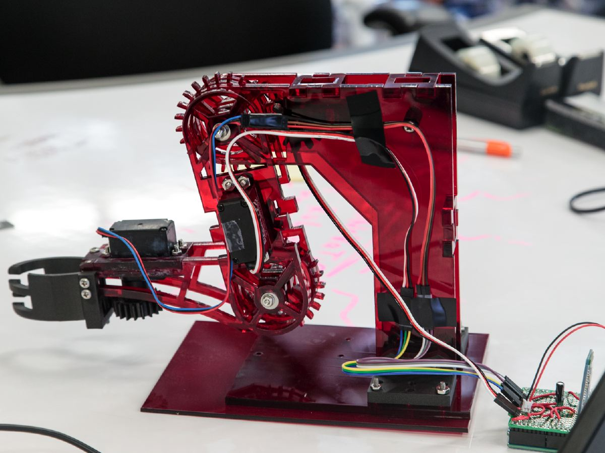

APL held a hackathon in summer 2019 challenging staff to build something impressive using an Arduino or Raspberry Pi. Teams were given one week to build devices that would be judged by local public school students visiting APL. I chose to build a robotic arm that would mimic the motions of my own arm. The arm consisted of three joints powered by servomotors, a shoulder, an elbow, and a grip. The main structural components of the arm were designed in tinkercad and laser cut out of acrylic. Some complex components were 3D printed. The controlling interface was three potentiometers attached to my shoulder, elbow, and index finger which conveyed their resistances values over bluetooth to the receiver that drove the arm.
The purpose of this hackathon was to entertain visiting high school students and to get them excited about STEM and the possibilities of what they can do with a little bit of hardware and a lot of imagination. Five teams competed in the Hackathon, and I was lucky enough to be selected the winner by the panel of judges.
